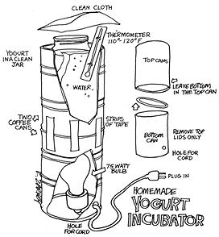

There is an alternative to the sugared, chemicalized, flavor-enhanced yogurt found in the supermarket. You can grow your own culture at home - at a fraction of the cost - in a simple, never-fail incubator made from two metal cans, an electric cord, a 75-watt bulb and a thermometer!
First find two good-sized cans of approximately the same diameter (three-pound coffee cans work well). Also get an electric cord with a light socket on one end and a plug on the other.
Now, in the bottom of one of the cans (the smaller one, if they aren't the same size), punch a hole just large enough to allow you to thread in the plug of the cord. Pull the plug all the way through the hole and leave the socket inside the can. Screw a regular 75-watt bulb (I don't think the Soft-White type will work as well) into the socket. Put the other can - bottom down - on top of the first . . . and you're ready to go. Now for the yogurt.
Find a large clean glass jar that will fit comfortably - with space around its sides - into the top can. Fill the jar with warm milk (not too hot . . . 100°-120° Fahrenheit). If you're using reconstituted (non-instant) powdered milk, add a large can of evaporated milk to the full jar. Now mix in 2 to 4 heaping tablespoons of the tastiest yogurt you can find (natural flavor is best but the fruits work too). The more you use the faster the batch will congeal.
Fill the top can of your incubator about half full with water warm enough to register between 110° and 120° F. on the thermometer. Set the jar in the can and check to make sure the water comes up at least even with the yogurt inside the glass container. In other words, all the yogurt should be below the level of the warm water outside. Now cover the top of the jar with a clean cloth, plug in the cord and put your incubator where it won't be disturbed for about four hours.
The 75-watt bulb should keep the temperature of the water fairly constant. Anywhere between 100° and 120° F. is OK, but - just to make sure check the water with the thermometer every once in a while the first time you make yogurt.
If, for some reason, a 75-watt bulb doesn't maintain the proper temperature . . . try one a little larger or smaller, as necessary.
After four hours have passed, check the yogurt with a spoon or by tilting the jar slightly. Gently, though, or the culture might curdle. If the yogurt hasn't congealed, let it incubate another half-hour or so and test again (ours usually takes 4 1/2 hours). When the culture's consistency is to your liking, put a cover on the jar and pop it into the refrigerator. Additional incubation makes yogurt increasingly sour, so incubate yours to taste and stop. When the culture has cooled, it's all ready to eat.
Dig into the yogurt as is, with a little honey and fruit, with prunes or . . . ? Don't forget to save a few spoonfuls to start your next batch!
|
 |
|
|